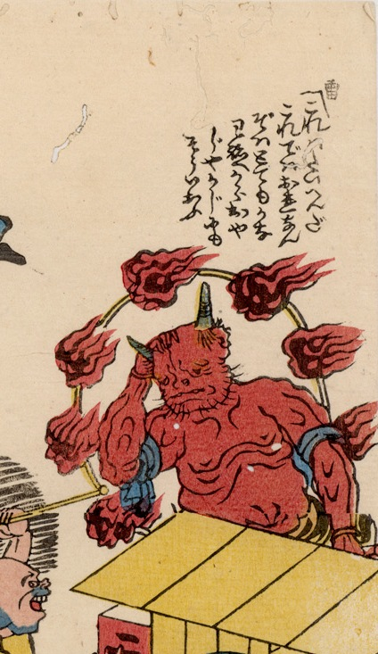

頭を抱える赤鬼。2本の角と顎ひげを生やしている。火炎をまとった雷太鼓を背負っている。
出典：親書誌：U426_nichibunken_0207：〔江戸鯰と信州鯰；エドナマズトシンシュウナマズ〕／日付：2010／資源識別子：U426_nichibunken_0207_0002_0000
Copyright (c)2010- International Research Center for Japanese Studies, Kyoto, Japan. All rights reserved.